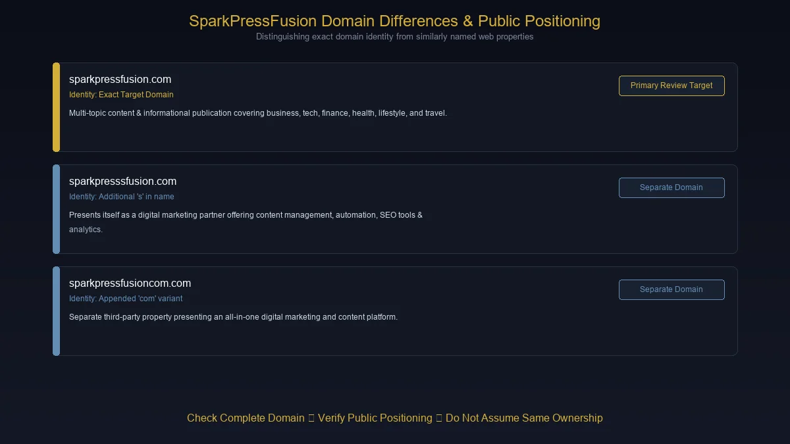
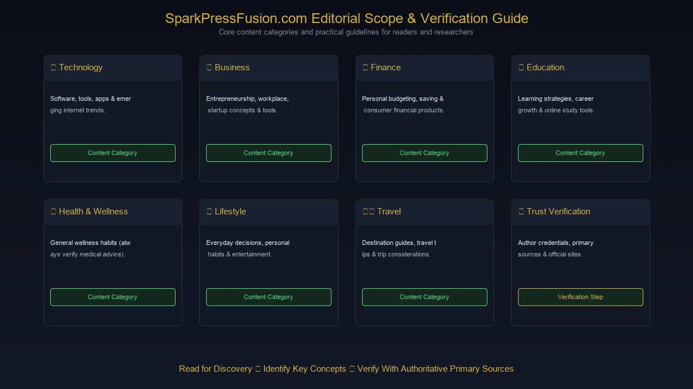

If you searched for sparkpressfusion com, you may have noticed something unusual: the name appears in several different descriptions online.
One page describes SparkPressFusion as a broad digital publication. Another presents a similarly named site as a digital marketing platform. Some third-party articles describe it as a content and publishing service, while others focus almost entirely on whether the website is trustworthy.
So what exactly is SparkPressFusion.com?
The most important answer is also the simplest:
You need to distinguish the exact domain from similarly named websites before deciding what SparkPressFusion is.
Current third-party coverage of sparkpressfusion.com generally describes it as a multi-topic content website covering areas such as business, finance, education, health, lifestyle, technology, travel, and entertainment. Meanwhile, the near-identical sparkpresssfusion.com publishes an About page describing itself as a digital marketing partner with tools for content management, marketing automation, SEO, social media management, and analytics.
Those are not the same domain.
That distinction is the starting point for understanding sparkpressfusion com properly.
What Is SparkPressFusion.com?
Based on the current public information surrounding the exact sparkpressfusion.com name, SparkPressFusion.com is best approached as a broad online content and information website rather than automatically assuming it is a standalone software application.
Recent descriptions of the site identify content across multiple categories, including:
- Business
- Technology
- Finance
- Education
- Health
- Lifestyle
- Travel
- Entertainment
- General-interest topics
- Digital tools and online trends
This makes it closer to a multi-topic digital publication or content hub than a narrowly focused technology company.
That distinction matters because the way you evaluate an informational website is different from the way you evaluate software.
A software platform normally has things such as:
- Account registration
- Product documentation
- Pricing
- Feature pages
- Dashboards
- Product demonstrations
- Customer support
- Technical documentation
A content website, on the other hand, is primarily built around:
- Articles
- Categories
- Guides
- Explanations
- Search-driven topics
- Editorial content
Recent coverage of the exact domain points more strongly toward the second model.
Why Is SparkPressFusion.com Confusing?
The confusion is largely caused by the name.
SparkPressFusion sounds like the name of a software product, publishing platform, creative agency, or marketing technology company.
That naturally leads people to search questions such as:
- What is SparkPressFusion?
- Is SparkPressFusion a software platform?
- Is SparkPressFusion a digital marketing tool?
- Is SparkPressFusion legitimate?
- Is SparkPressFusion safe?
- Does SparkPressFusion offer SEO services?
- Is SparkPressFusion a publishing website?
There is another reason for the confusion: similar domains exist.
This is particularly important because sparkpressfusion.com and sparkpresssfusion.com differ by only one additional s.
A visitor who types the name incorrectly can therefore arrive at a completely different website.
SparkPressFusion.com vs SparkPressSFusion.com

This is one of the most important distinctions to understand.
| Domain | Public positioning |
|---|---|
| sparkpressfusion.com | Broad informational/content website according to current third-party coverage |
| sparkpresssfusion.com | Presents itself as a digital marketing partner/platform |
| sparkpressfusioncom.com | Another similarly named domain with a different platform-style presentation |
The near-identical sparkpresssfusion.com About page explicitly describes the site as a digital marketing partner and says it provides content management, marketing automation, SEO tools, social media management, and analytics.
That does not prove those services belong to the exact sparkpressfusion.com domain.
This is why copying descriptions from one domain to another can produce an inaccurate article.
If you are researching SparkPressFusion, always check the complete domain name before relying on information.
What Kind of Content Is Associated With SparkPressFusion.com?

The strongest consistent theme across current coverage is that the exact SparkPressFusion.com domain has a broad editorial scope.
Rather than concentrating on one industry, the site is associated with articles covering multiple areas of everyday interest.
Technology
Technology content can include discussions around:
- Software
- Online platforms
- Digital tools
- Emerging technology
- Apps
- Internet services
- Technology trends
This category can be particularly useful for readers who want a basic explanation before moving to a specialist technology publication or primary documentation.
Business
Business content may cover subjects such as:
- Entrepreneurship
- Business strategies
- Online businesses
- Companies
- Workplace topics
- Business tools
- General commercial concepts
For someone unfamiliar with a topic, this type of article can provide a useful starting point.
For professional business decisions, however, readers should still consult authoritative business, regulatory, or industry sources where appropriate.
Finance
Finance is another important topic area associated with SparkPressFusion.
Articles in this category may discuss:
- Saving
- Banking
- Financial concepts
- Trading
- Personal finance
- Digital finance
- Consumer financial products
Finance is also an area where readers should be more careful.
A general-interest article can explain a concept, but it should not automatically be treated as personalized financial advice.
Before making an investment or significant financial decision, verify important information through primary financial sources or qualified professionals.
Education
Education content can appeal to:
- Students
- Parents
- Teachers
- Professionals
- Lifelong learners
Possible subjects include learning strategies, education trends, career development, online learning, and general academic topics.
The value of an education article depends heavily on how well the information is sourced and how current it is.
Health and Wellness
Health is another category that requires additional care.
General articles about:
- Wellness
- Healthy habits
- Lifestyle
- Nutrition
- Everyday health topics
can be useful for basic awareness.
But an informational website should not replace a doctor, pharmacist, licensed healthcare professional, or authoritative medical source when a decision involves diagnosis, treatment, medication, or an urgent health concern.
This distinction is especially important when evaluating broad multi-topic websites.
Lifestyle
Lifestyle content can cover a wide range of everyday subjects.
That may include:
- Personal habits
- Home-related topics
- Everyday decisions
- Entertainment
- Relationships
- Consumer interests
- Personal development
Lifestyle articles are generally lower-risk than financial or medical content, but accuracy and context still matter.
Travel
Travel is another natural fit for a general-interest publication.
Travel content can cover:
- Destinations
- Planning
- Travel tips
- Activities
- Accommodation considerations
- Local experiences
Travel information also changes quickly, so readers should verify current opening hours, entry requirements, prices, visa rules, and transportation information with official sources before traveling.
Is SparkPressFusion.com a Software Platform?
This is one of the biggest questions surrounding the keyword.
The safest answer is:
Do not assume that SparkPressFusion.com is a SaaS platform simply because the name sounds like one.
Current third-party descriptions of the exact domain characterize it primarily as a content website.
At the same time, the similarly spelled sparkpresssfusion.com explicitly describes itself as a digital marketing platform and lists features such as:
- Content management
- Marketing automation
- SEO optimization
- Social media management
- Analytics and reporting
Those claims appear on that domain's own About page.
The difference is only one letter, but the distinction is significant.
In practical terms
If you are looking for an article website, make sure you are researching:
sparkpressfusion.com
If you are looking at the digital-marketing platform described on the About page, you may actually be dealing with:
sparkpresssfusion.com
Never assume they are the same organization without evidence.
Why Domain Accuracy Matters
A domain name is more than spelling.
It determines:
- Which organization you are visiting
- Which privacy policy applies
- Which terms apply
- Which services are actually being offered
- Where your information is being submitted
- Whether a login belongs to the expected service
Consider the difference between:
sparkpressfusion.com
and
sparkpresssfusion.com
The second contains an additional s.
That tiny difference can completely change the destination.
This is a common issue across the internet, especially when a brand-like phrase becomes popular enough for multiple domains to appear in search results.
What Does the Name "SparkPressFusion" Suggest?
The name itself appears to combine three concepts:
Spark
A spark suggests:
- Ideas
- Creativity
- Innovation
- Inspiration
Press
"Press" can suggest:
- Publishing
- Media
- Journalism
- Communication
Fusion
"Fusion" implies:
- Combining ideas
- Connecting disciplines
- Blending technology and content
- Bringing different capabilities together
That makes the name sound much more specialized than a conventional general-interest blog.
But branding should not be confused with verified functionality.
A website's actual pages and services are more important than what its domain name seems to imply.
How Does SparkPressFusion.com Compare With a Specialist Publication?
A useful way to evaluate a broad website is to compare it with a specialist source.
| General content site | Specialist publication |
|---|---|
| Covers many subjects | Focuses on a specific field |
| Beginner-friendly | Often deeper |
| Broad search coverage | Stronger niche expertise |
| Quick explanations | Detailed analysis |
| General audience | Specialized audience |
| Variable author expertise | Often identifiable subject experts |
Neither model is automatically better.
A general website can be useful when you simply want to understand a new term.
A specialist publication is usually more appropriate when you need technical depth.
For example, someone researching a new software concept might start with a general explainer, then move to the software company's documentation.
Someone researching an investment decision should go beyond a general article and check primary financial sources.
The same principle applies to legal and medical subjects.
Is SparkPressFusion.com Legit?
There are two separate questions here:
1. Does the website exist and function as a content website?
2. Should every article on it automatically be considered authoritative?
Those questions should not be confused.
Current third-party coverage describes sparkpressfusion.com as an active multi-topic content site. Some recent reviews characterize it as useful for introductory information while warning that readers should independently verify important claims, especially in finance and health.
That is a more useful assessment than simply labeling the website "legit" or "scam."
A website can be technically accessible without every article being authoritative.
Likewise, a site can publish useful introductory material without being a major specialist publication.
A practical approach
Use SparkPressFusion as a starting point for information, then verify important facts through:
- Official company websites
- Government sources
- Regulatory bodies
- Academic publications
- Professional organizations
- Primary documentation
- Recognized specialist publications
What Are the Trust Signals to Look For?
When evaluating SparkPressFusion or any unfamiliar content website, look beyond the domain name.
1. Author information
Can you determine who wrote the article?
For specialized topics, author expertise matters.
2. Sources
Does the article provide links or references to primary information?
3. Publication date
When was the information published?
Some topics change quickly.
4. Update date
Has the article been reviewed since its original publication?
5. Editorial information
Does the website explain how content is produced, edited, or corrected?
6. Contact information
Is there a meaningful way to contact the website?
7. Clear disclosures
Are sponsored, affiliate, or promotional relationships disclosed?
8. Consistency
Does the website maintain reasonable quality across its different categories?
These signals do not produce a perfect trust score, but together they give readers a much better basis for judgment.
Why Broad Content Websites Exist
A website covering business, technology, finance, education, health, travel, and lifestyle may look unusual compared with a traditional magazine.
But broad content publishing is common on the modern web.
The advantage is obvious:
A single publication can serve many types of search queries.
Someone might visit looking for:
- A business explanation
Another reader might arrive for:
- A technology guide
Someone else may search for:
- A travel topic
This creates a large potential audience.
The disadvantage is that broad coverage makes it harder to establish deep expertise in every category.
A site can be good at explaining a general concept while still not being the best source for a specialized question.
SparkPressFusion.com for Beginners
For a beginner, a general information website can be useful because it reduces the barrier to understanding unfamiliar terminology.
A good first-pass workflow is:
Search → Read overview → Identify key terms → Find primary source → Verify important claims
For example, suppose you encounter an unfamiliar technology.
You might first read a simple explanation to understand:
- What the technology is
- What it does
- Why people use it
- What terminology matters
Then you can move to:
- Official documentation
- Product documentation
- Industry standards
- Technical publications
This approach is more reliable than expecting one general-interest website to answer every question.
SparkPressFusion.com and SEO
Another reason SparkPressFusion appears in discussions online is its relationship with search-oriented content.
Broad publishing websites often organize articles around questions people type into Google and other search engines.
That can produce pages targeting phrases such as:
- What is...
- How does...
- Is...
- Benefits of...
- Best...
- Guide to...
- Review of...
This structure can make articles easy to discover.
However, search visibility and authority are not the same thing.
A page can rank for a keyword without being the best possible source for every aspect of that topic.
For readers, this is another reason to distinguish:
Search result visibility ≠ professional authority
Can Businesses Use SparkPressFusion.com for Content Promotion?
This is an area where you should be especially careful with domain identity.
Some third-party coverage discusses guest posts, sponsored content, or publishing opportunities associated with SparkPressFusion.
However, because multiple similarly named domains exist and the public descriptions are inconsistent, businesses should confirm the exact domain, current publishing terms, pricing, link policies, disclosure rules, and ownership before paying for placement.
Do not assume that a third-party article describing a "SparkPressFusion platform" is proof of a particular service.
Before purchasing anything, verify:
- Exact domain
- Current contact information
- Publishing requirements
- Editorial review process
- Link attributes
- Sponsored-content disclosure
- Cancellation/refund terms
- Whether the page remains publicly accessible
- Whether the promised service actually exists
This protects both the business and its marketing budget.
SparkPressFusion.com and Backlinks
If you are researching SparkPressFusion because you found it in an SEO context, remember an important distinction.
A backlink is not automatically valuable simply because it exists.
A useful editorial link should ideally be:
- Relevant
- Contextual
- Helpful to the reader
- Naturally placed
- On a page that provides genuine value
No single website can guarantee a Google ranking improvement.
Search performance depends on many factors, including:
- Content quality
- Search intent
- Site architecture
- Technical SEO
- Internal linking
- Reputation
- Competition
- Relevance
- Overall website quality
Therefore, a marketing decision should not be based solely on the promise of "high DA," "instant rankings," or similar metrics.
Is SparkPressFusion.com Safe to Visit?
Normal web safety and information credibility are two different things.
A website can be safe to browse while still containing an article that you should verify.
Likewise, a website can look professional without automatically being trustworthy.
When visiting an unfamiliar domain:
- Check the spelling carefully.
- Look at the browser address bar.
- Avoid entering passwords on unexpected pages.
- Do not install unknown software.
- Do not run commands copied from an unfamiliar website.
- Be cautious with unexpected downloads.
- Avoid submitting sensitive personal information unless necessary.
- Verify financial or medical claims independently.
The biggest practical concern with SparkPressFusion is not simply the word "safe."
It is knowing which SparkPressFusion domain you are actually dealing with.
The Similar-Domain Problem Explained
Suppose you search for:
sparkpressfusion com
You may encounter:
SparkPressFusion.com
A domain associated in current third-party coverage with a broad content publication.
SparkPressSFusion.com
A near-identical domain whose own About page describes digital marketing tools and services.
SparkPressFusionCom.com
Another similarly named web property that presents itself as an all-in-one content and digital marketing platform.
These should not automatically be treated as one company.
The safest approach is to evaluate each domain independently.
What Should You Check Before Using SparkPressFusion?
Before relying on the site for an important purpose, ask five questions.
Who operates the exact domain?
Look for a company name, editorial team, or identifiable organization.
What is the website actually offering?
Is it publishing articles, software, marketing services, or something else?
Does the content have identifiable expertise?
This matters particularly for health, finance, law, and technical subjects.
Are important claims sourced?
A credible article should make it reasonably easy to verify significant claims.
Is the domain spelled correctly?
This sounds trivial, but in this case it is one of the most important checks.
SparkPressFusion.com: Strengths and Limitations
Potential strengths
- Broad range of topics
- Accessible content for general readers
- Useful for discovering unfamiliar subjects
- Multiple categories in one place
- Easy starting point for general research
Potential limitations
- Broad coverage can mean limited specialization
- Similar domain names create confusion
- Not every article should be treated as expert guidance
- Important finance, health, or legal claims require verification
- Third-party descriptions of the brand are inconsistent
- Readers should distinguish the exact domain before assuming a service exists
The right conclusion is therefore not simply "good" or "bad."
It is:
Useful for discovery, but evaluate individual content and verify important information.
Who Is SparkPressFusion.com Best For?
SparkPressFusion may be most useful for readers who want accessible information across multiple subjects.
Casual readers
Useful when you want a quick explanation.
Beginners
Helpful for understanding basic concepts before going deeper.
Students
Potentially useful as an introductory reading source, provided important information is cross-checked.
Digital researchers
Useful for discovering terminology, websites, products, and trends that can then be researched through primary sources.
Marketers
Potentially relevant when investigating publishing opportunities, but exact domain ownership and current terms should be verified before paying for any placement.
Who Should Be More Careful?
Some readers should apply a higher level of scrutiny.
Investors
Verify financial information with primary financial sources.
Patients
Do not use general web content as a substitute for medical care.
Legal users
Laws vary by jurisdiction and change over time.
Businesses
Verify claims about vendors, products, services, pricing, and contracts independently.
SEO professionals
Do not assume that a backlink or guest post automatically produces ranking improvements.
How to Research SparkPressFusion.com Properly
If your goal is simply to understand the website, use this process.
Step 1: Confirm the domain
Make sure the address is exactly the one you intended to visit.
Step 2: Look at the homepage
Identify whether the site is primarily a publication, software product, service company, or something else.
Step 3: Check the About page
Look for ownership, mission, team information, and business details.
Step 4: Check the Contact page
See whether there is a meaningful contact method.
Step 5: Read several unrelated articles
Do not judge a publication based on one page.
Step 6: Check authorship
Look for author names and credentials.
Step 7: Verify high-impact claims
Use primary sources whenever money, health, legal rights, security, or major purchases are involved.
This process takes only a few minutes and gives you a much clearer picture.
Frequently Asked Questions About SparkPressFusion.com
What is SparkPressFusion.com?
SparkPressFusion.com is associated with a broad multi-topic online content website covering areas such as business, technology, finance, education, health, lifestyle, travel, and other general-interest subjects. Current third-party coverage describes it primarily as an informational publishing site.
Is SparkPressFusion.com a software platform?
The exact sparkpressfusion.com domain is more commonly described in current coverage as a content website. Do not confuse it with similarly named domains that describe themselves as digital marketing platforms.
What is sparkpresssfusion.com?
sparkpresssfusion.com is a near-identical domain. Its own About page describes it as a digital marketing partner offering content management, marketing automation, SEO optimization, social media management, and analytics.
Is SparkPressFusion.com legitimate?
It appears to be a functioning public website, but legitimacy and authority are different questions. Readers should evaluate individual content, authorship, sourcing, and transparency rather than assuming every article is authoritative.
Is SparkPressFusion.com safe?
Normal browsing safety and content reliability are separate issues. Use standard web-security precautions and verify important claims independently, especially for finance, health, legal, and security topics.
What topics does SparkPressFusion.com cover?
Current coverage associates the site with business, technology, finance, education, health, lifestyle, travel, entertainment, and other general-interest topics.
Can I use SparkPressFusion.com for financial information?
You can use general articles to learn terminology or understand a basic concept, but important financial decisions should be based on authoritative financial information and, where appropriate, professional advice.
Can SparkPressFusion.com be used for health information?
It can provide general educational material, but health information should be checked against qualified medical professionals and authoritative health sources before it influences diagnosis or treatment.
Is SparkPressFusion.com the same as SparkPressFusionCom.com?
Not necessarily. Similar names and domains should be treated as separate websites unless there is clear evidence that they belong to the same organization.
Why are there different descriptions of SparkPressFusion online?
The search results contain references to multiple similarly named domains and several third-party interpretations of the brand. Some descriptions refer to a content website, while others describe marketing or software functionality associated with different domains.
Does SparkPressFusion.com offer SEO services?
Do not assume that it does simply because similarly named websites describe SEO tools. The exact domain should be checked for its current services before relying on a third-party description.
Can SparkPressFusion help with SEO?
If you are considering it for content placement or a backlink, evaluate the exact site, page quality, relevance, link policy, and current publishing terms. A backlink cannot guarantee Google rankings.
Should I trust everything published on SparkPressFusion.com?
No website should be treated as an unquestionable authority across every subject. Use broad informational articles as a starting point and verify consequential claims through primary or specialist sources.
Final Verdict: What Is SparkPressFusion.com?
The simplest way to understand sparkpressfusion com is to separate the name from the specific domain.
The exact sparkpressfusion.com name is currently associated in search coverage with a broad, multi-topic content website covering subjects such as technology, business, finance, education, health, lifestyle, travel, and entertainment.
But there is a significant source of confusion: similarly named domains present themselves differently.
The near-identical sparkpresssfusion.com, for example, describes itself as a digital marketing partner with content management, marketing automation, SEO, social media, and analytics capabilities.
That does not mean those descriptions should be merged into one brand.
If you are researching SparkPressFusion, check the complete domain first.
From there, treat the website according to what it actually provides.
For general-interest reading, a broad content publication can be useful. For technical, financial, medical, or legal decisions, go further and verify important claims against authoritative sources.
And if you are considering SparkPressFusion for marketing, guest posting, or SEO, confirm the exact domain, ownership, current terms, link policies, and publishing conditions before spending money.
In short, SparkPressFusion.com is best approached as an information and content destination, while similarly spelled domains should be evaluated separately. That small distinction makes the entire SparkPressFusion search landscape much easier to understand.
For more such useful information read our site ateliergolddruck.com